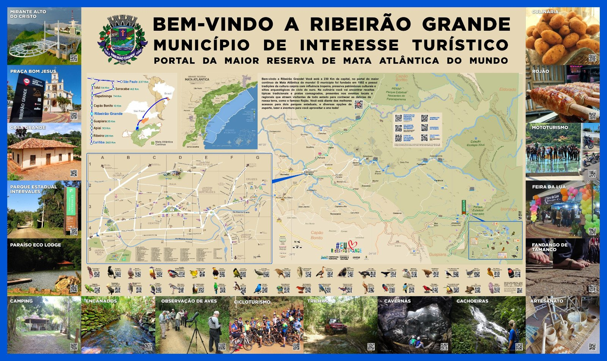

Descubra Ribeirão Grande
Localizado no sudoeste paulista, distante a 230 Km da capital, com população de aproximadamente 7,5 mil habitantes, o município fundado em 1993 preserva tradições da cultura caipira com influência tropeira, como a Dança de Fandango de Tamanco, a Casa Grande que é uma construção de taipa datada do século XVIII, e os sítios arqueológicos Encanados, sítios arqueológicos que preservam vestígios da formação do Brasil durante o ciclo do ouro.
A culinária traz receitas típicas tradicionais e pratos consagrados, presentes nas festas e eventos locais e regionais que atraem visitantes de norte a sul para conhecer as delícias da nossa terra, como o famoso Rojão.
Possui os melhores acessos para dois parques estaduais, rotas de cicloturismo dentro e fora desses parques, rotas de turismo religioso, de cavalgadas e passagem da rota Rastro da Serpente. Oferece opções de esporte e lazer como ciclismo, trilhas de jipes e motos, voo livre e corridas.
Seu território possui cerca de 30% de área coberta preservada, sendo portal de entrada para a Estação Ecológica Xitué, PENAP e o Parque Estadual Intervales, no coração do maior corredor de Mata Atlântica preservada do Brasil.

Acesso
Distância da capital: 261 km
Principais Vias de Acesso
Rodovia João Pereira dos Santos Filho
Rodovia Professor Francisco da Silva Pontes
Rodovia Sebastião Ferraz de Camargo Penteado
Cidades e distâncias (Km)
Capão Bonito 10
Guapiara 36
Buri 52
São Miguel Arcanjo 59
Itapetininga 74
Itapeva 76
Apiaí 94
Iporanga 135
Sete Barras 139
Sorocaba 142
Registro 160
Eldorado 178
Iguape 233
São Paulo 237
Curitiba 260